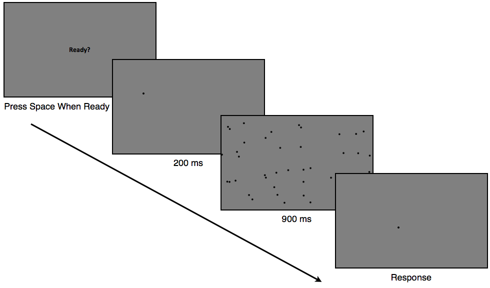
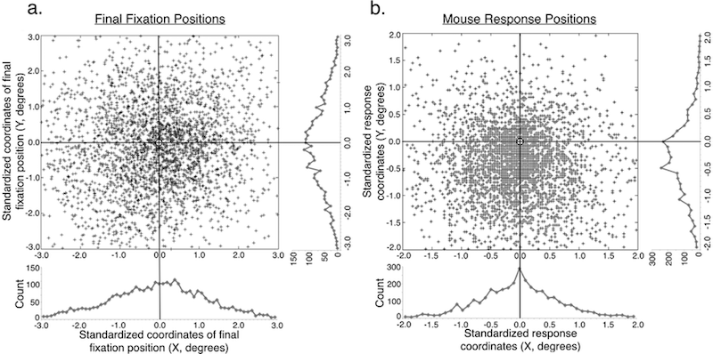

Interactions Between Attention & Working Memory
Basic procedure of all experimentsReproducing the location of an object from the contents of spatial working memory requires the translation of a noisy representation into an action at a single location, for instance a mouse click or a mark with a writing utensil. In many studies, these kinds of actions result in biased responses, which suggest distortions in spatial working memory.
However, there are other possible mechanisms that may result in distortions found in common spatial working memory tasks, involving an interaction between undistorted memories and non-uniformities in attention. Specifically, attentional resolution is finer below compared to above fixation, which led us to predict that bias could arise if participants tend to respond in locations below as opposed to above fixation. I designed a simple reproduction task that found a bias for participants to recall a previous target's position below it's true position. A second experiment utilized eye-tracking in order to observe where participants were fixating when making a response. This experiment replicated the downward response bias found Experiment 1 but demonstrated that fixations during response were unbiased and centered on the remembered object’s true position.
However, there are other possible mechanisms that may result in distortions found in common spatial working memory tasks, involving an interaction between undistorted memories and non-uniformities in attention. Specifically, attentional resolution is finer below compared to above fixation, which led us to predict that bias could arise if participants tend to respond in locations below as opposed to above fixation. I designed a simple reproduction task that found a bias for participants to recall a previous target's position below it's true position. A second experiment utilized eye-tracking in order to observe where participants were fixating when making a response. This experiment replicated the downward response bias found Experiment 1 but demonstrated that fixations during response were unbiased and centered on the remembered object’s true position.

Standardized plots of all final fixations (a) and mouse responses (b) in Experiment 2. 0,0 designates the true position of each memory item in each trial. 8 participants produced a total of 3,453 responses. The accompanying histograms show the distribution of standardized X and Y fixation and response coordinates.
A third experiment further evidenced a dependency on attention relative to fixation by shifting the effect horizontally when participants were required to tilt their heads. Together, these results highlight the complex pathway involved in translating probabilistic memories into discrete actions, and it presents a new attentional mechanism by which undistorted spatial memories can lead to distorted reproduction responses (Schurgin & Flombaum, 2014).